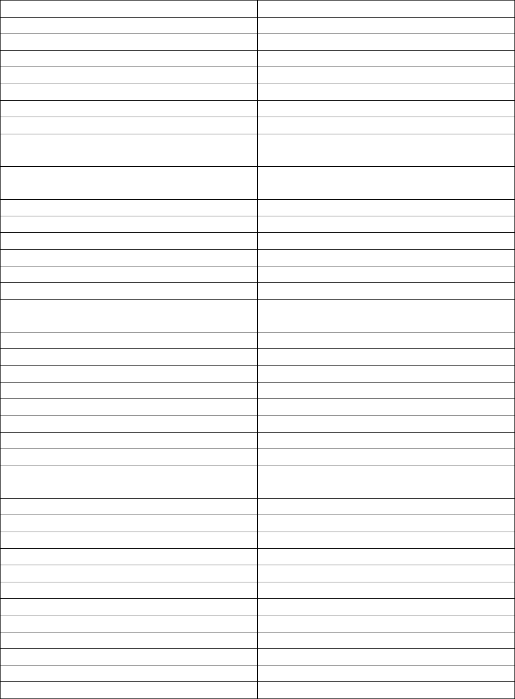

Decrease Window Spacing By 4
Increase Window Spacing By 4
Decrease Screen Spacing By 4
Increase Screen Spacing By 4
Toggle Grid Select Fav Apps
Toggle Grid Select Window To Bring
Toggle Grid Go To Selected Window
Moves Focused Window To Master Others
Maintain Order
Rotate All Windows Except Master And
Keep Focus In Place
Rotate All Windows In The Current Stack
Move Focus To Master Window
Switch To The Next Layout
MODKEY + SHIFT + BACKSPACE
Toggle noborder w/ Fullscreen
Copy The Current Focused Window To All
Workspaces (Visible In All)
Shrink Horizontally Window Width
Expand Horizontally Window Width
Shrink Vertically Window Width
Expand Vertically Window Width
Pull Window Up To A Tabbed Sublayout
Pull Window Right To A Tabbed Sublayout
Pull Window Down To A Tabbed Sublayout
Pull Window Up To A Tabbed Sublayout
Merge All Windows In Current Workspace to
A Tabbed Sublayout
Unmerge Current Focused Tabbed Window
Unmerge All Windows In Tabbed
Switch To The Next Tab (Tabbed)
Switch To The Previous Tab (Tabbed)
MODKEY + S + (a,d,e,g,I,v,u,w,y,z,t,b,r)
Toggle Search Engine Prompt
Toggle Search Engine From SearchList
MODKEY + P + (m,p,g,r,s,x)
Toggle Xprompt (ManP,Pass,SSH...)
MODKEY + CTRL + RETURN (Scratchpad)
MODKEY + CTRL + C (Scratchpad)
MODKEY + CTRL + E (Scratchpad)
MODKEY + CTRL + a (Scratchpad)
MODKEY + CTRL + P (Scratchpad)